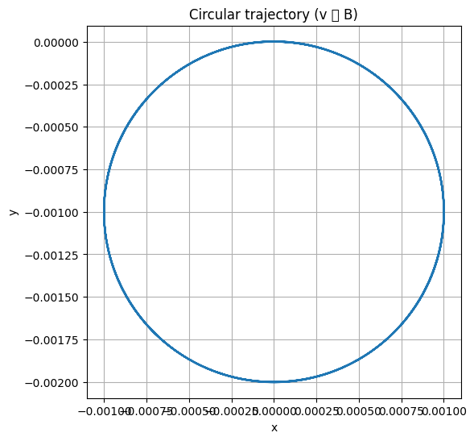
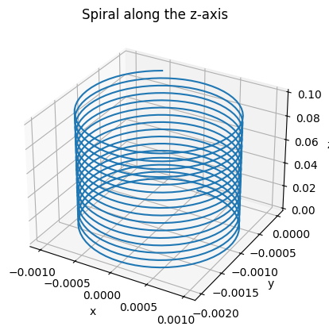
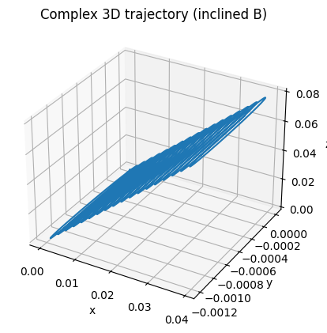

Problem 1
Electromagnetism
Problem 1 — Simulation of the Lorentz Force
🌟 Motivation
The Lorentz force governs how a charged particle moves through electric and magnetic fields. Understanding this phenomenon is essential in a wide range of scientific and engineering applications:
- ⚛ Particle Accelerators — Guide and speed up particles using magnetic fields.
- 🧪 Mass Spectrometry — Identify chemical substances by separating ions by mass and charge.
- 🔥 Plasma Confinement — Trap hot plasma in devices for nuclear fusion (e.g., Tokamaks).
- 🌌 Space Physics — Explain how charged particles (like solar wind) interact with magnetic fields in space.
⚡ Electromagnetism Problem: Lorentz Force
Given:
- Charge: \(q = 1\ \text{C}\)
- Mass: \(m = 1\ \text{g} = 0.001\ \text{kg}\)
1. Theory: Lorentz Force
The Lorentz force is defined as:
Where:
- \(\vec{F}\) — force acting on the charge,
- \(q\) — charge,
- \(\vec{E}\) — electric field vector,
- \(\vec{B}\) — magnetic field vector,
- \(\vec{v}\) — velocity of the particle.

📌 Circular Trajectory of a Charged Particle
This plot shows the circular trajectory of a charged particle in a uniform magnetic field when its velocity is perpendicular to the magnetic field direction.
This is a classic case of motion governed by the Lorentz force.
⚙️ Initial Configuration
- Initial position:
$$ \vec{r}_0 = (0,\ 0,\ 0) $$
- Initial velocity (perpendicular to the field):
$$ \vec{v}_0 = v_x\,\hat{x} $$
- Magnetic field (along the \(z\)-axis):
$$ \vec{B} = B\,\hat{z} $$
⚛️ Key Insight
When the velocity is perpendicular to the magnetic field (\(\vec{v} \perp \vec{B}\)), the particle experiences a centripetal Lorentz force:
This force causes the particle to move in a circular path in the plane perpendicular to \(\vec{B}\) (i.e., the \(x\)–\(y\) plane).
- No motion occurs along the magnetic field direction
- The radius of the circular path is given by:
$$ R = \frac{mv}{|q|B} $$
🧪 Applications
- Cyclotron motion
- Magnetic confinement in plasma devices
- Basic model for gyration in space physics
# КРУГОВАЯ ТРАЕКТОРИЯ
import numpy as np
from scipy.integrate import solve_ivp
import matplotlib.pyplot as plt
# Параметры
q = 1 # Кл
m = 0.001 # кг
qm = q / m
# Уравнения Лоренца
def lorentz_rhs(t, y):
vx, vy, vz = y[3:]
B = np.array([0, 0, 1]) # Магнитное поле вдоль z
v = np.array([vx, vy, vz])
dvdt = qm * np.cross(v, B)
return [vx, vy, vz, *dvdt]
# Начальные условия: положение и скорость
y0 = [0, 0, 0, 1, 0, 0] # v вдоль x, B вдоль z
# Временной интервал
t_span = (0, 0.05)
t_eval = np.linspace(*t_span, 1000)
# Решение ОДУ
sol = solve_ivp(lorentz_rhs, t_span, y0, t_eval=t_eval)
# График
plt.figure(figsize=(6,6))
plt.plot(sol.y[0], sol.y[1])
plt.xlabel('x')
plt.ylabel('y')
plt.title('Circular trajectory (v ⟂ B)')
plt.axis('equal')
plt.grid(True)
plt.show()
2. Equation of Motion
From Newton's second law:
Dividing both sides by mass \(m\):

📌 Spiral Motion Along the z-Axis
The graph shows the spiral trajectory of a charged particle in a magnetic field directed along the z-axis. This type of motion is typical for charged particles in magnetic traps and in plasma physics.
⚙️ Initial Conditions
- Initial position:
$$ \vec{r}_0 = (0,\ 0,\ 0) $$
- Velocity:
- Magnetic field:
$$ \vec{B} = B \, \hat{z} $$
🔄 Motion Components
| Component | Direction | Effect |
|---|---|---|
| \(v_{\perp}\) | Perpendicular to \(\vec{B}\) | Circular motion (due to Lorentz force) |
| \(v_{\parallel}\) | Parallel to \(\vec{B}\) | Translational motion along the \(z\)-axis |
🌀 Resulting Trajectory
The combination of these two components leads to a spiral (helical) trajectory along the \(z\)-axis:
- The particle rotates in the \(xOy\) plane
- Simultaneously moves along the \(z\)-axis
- Final path: a helix along the magnetic field line
# СПИРАЛЬНАЯ ТРАЕКТОРИЯ ВДОЛЬ Z
import numpy as np
from scipy.integrate import solve_ivp
import matplotlib.pyplot as plt
from mpl_toolkits.mplot3d import Axes3D
q = 1 # Кл
m = 0.001 # кг
qm = q / m
def lorentz_rhs(t, y):
vx, vy, vz = y[3:]
B = np.array([0, 0, 1]) # B вдоль z
v = np.array([vx, vy, vz])
dvdt = qm * np.cross(v, B)
return [vx, vy, vz, *dvdt]
y0 = [0, 0, 0, 1, 0, 1] # v по x и по z
t_span = (0, 0.1)
t_eval = np.linspace(*t_span, 1000)
sol = solve_ivp(lorentz_rhs, t_span, y0, t_eval=t_eval)
fig = plt.figure()
ax = fig.add_subplot(111, projection='3d')
ax.plot(sol.y[0], sol.y[1], sol.y[2])
ax.set_xlabel('x')
ax.set_ylabel('y')
ax.set_zlabel('z')
ax.set_title('Spiral along the axis z')
plt.show()
3. Python Simulation (Scenarios)
We implement three scenarios to observe the resulting particle trajectories:
a. Circular Trajectory
Conditions: - \(\vec{E} = 0\) - \(\vec{B} = (0, 0, B)\) (along the \(z\)-axis) - Initial velocity: \(\vec{v}_0 = (v, 0, 0)\)
Expected result: Circular motion in the \(xy\)-plane.
b. Spiral Along the Z-axis
Conditions: - \(\vec{E} = 0\) - \(\vec{B} = (0, 0, B)\) - Initial velocity: \(\vec{v}_0 = (v, 0, v_z)\)
Expected result: Helical (spiral) motion along the \(z\)-axis.
c. Interesting Drift Trajectory
Conditions: - \(\vec{E} \ne 0\), \(\vec{B} \ne 0\) - Example: \(\vec{E} = (0, E, 0)\), \(\vec{B} = (0, 0, B)\) - Initial velocity: \(\vec{v}_0 = (v_x, 0, 0)\)
Expected result: Complex drift motion due to both electric and magnetic fields (E×B drift).

📌 Complex 3D Trajectory in an Inclined Magnetic Field
The figure below illustrates a complex helical trajectory of a charged particle moving in a uniform but inclined magnetic field. Unlike simple circular or spiral motion along a principal axis, this path arises due to the interaction of velocity components and a magnetic field that is not aligned with the coordinate axes.
⚙️ Initial Configuration
- Initial position:
$$ \vec{r}_0 = (0,\ 0,\ 0) $$
- Initial velocity:
$$ \vec{v}_0 = v_x\,\hat{x} + v_y\,\hat{y} + v_z\,\hat{z} $$
- Inclined magnetic field:
$$ \vec{B} = B_x\,\hat{x} + B_y\,\hat{y} + B_z\,\hat{z} $$
🔍 Key Insight
In an inclined magnetic field, the particle exhibits complex 3D motion:
- Circular motion in the plane perpendicular to \(\vec{B}\)
- Linear motion along the direction of \(\vec{B}\)
- The combination produces a helical (drift) trajectory in 3D space
🧪 Physical Context
This type of motion is relevant to:
- Space physics (e.g., cosmic ray propagation)
- Magnetic confinement (e.g., in fusion devices)
- Non-uniform or inclined field analysis
# СЛОЖНАЯ ТРАЕКТОРИЯ В НАКЛОННОМ ПОЛЕ
import numpy as np
from scipy.integrate import solve_ivp
import matplotlib.pyplot as plt
from mpl_toolkits.mplot3d import Axes3D
q = 1
m = 0.001
qm = q / m
def lorentz_rhs(t, y):
vx, vy, vz = y[3:]
B = np.array([0.5, 0, 1]) # Наклонное поле
v = np.array([vx, vy, vz])
dvdt = qm * np.cross(v, B)
return [vx, vy, vz, *dvdt]
y0 = [0, 0, 0, 1, 0, 0.5] # скорость по x и z
t_span = (0, 0.1)
t_eval = np.linspace(*t_span, 1000)
sol = solve_ivp(lorentz_rhs, t_span, y0, t_eval=t_eval)
fig = plt.figure()
ax = fig.add_subplot(111, projection='3d')
ax.plot(sol.y[0], sol.y[1], sol.y[2])
ax.set_xlabel('x')
ax.set_ylabel('y')
ax.set_zlabel('z')
ax.set_title('Complex 3D trajectory (inclined B)')
plt.show()